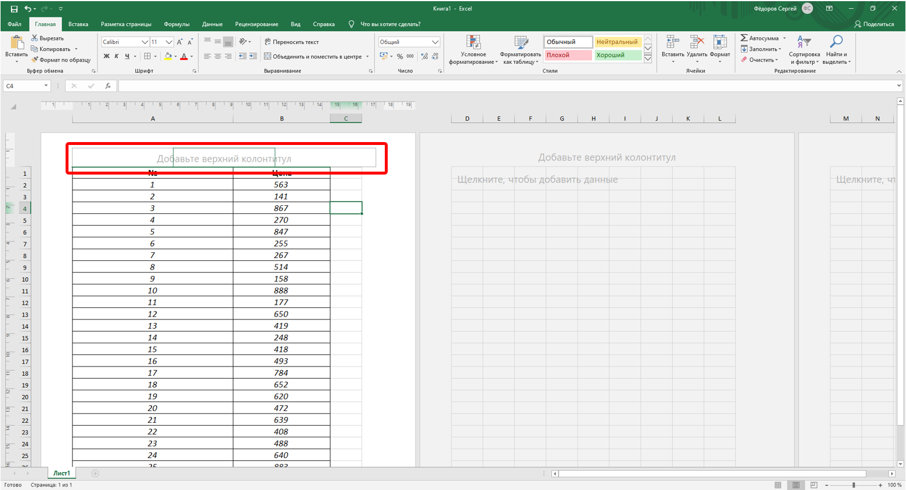

Настройка масштаба печати
Настройка масштаба печати
По умолчанию установлен масштаб печати 100 % от натуральной величины таблицы на листе.
Для выбора произвольного масштаба печати (как с уменьшением, так и с увеличением) установите требуемое значение в счетчике Масштаб группы Вписать (см. рис. 15.1). Минимально возможный масштаб печати 10 %, максимально возможный – 400 %.
Кроме того, можно подобрать необходимый масштаб печати так, чтобы таблица размещалась на заданном числе страниц. Для этого в раскрывающихся списках Ширина и Высота группы Вписать (см. рис. 15.1) выберите число страниц в ширину и высоту, на которых должна разместиться таблица. В данном случае возможна только печать в масштабе с уменьшением.
Создание колонтитулов
Колонтитулами называют области, расположенные в верхнем и нижнем полях каждой из страниц документа.
Колонтитулы создают в режиме просмотра Разметка страницы. Верхний и нижний колонтитулы создаются одинаково.
Колонтитул имеет три поля: левое, центральное и правое, каждое из которых заполняется и оформляется независимо друг от друга. Поля колонтитула отображаются при наведении указателя мыши (рис. 15.7).

Рис. 15.7. Отображение полей колонтитула
Для добавления колонтитула щелкните левое, центральное или правое поле верхнего или нижнего колонтитула в верхней или нижней части листа, после чего автоматически будет произведен переход в контекстную вкладку Работа с колонтитулами/Конструктор (рис. 15.8).
Рис. 15.8. Создание колонтитула во вкладке Работа с колонтитулами/Конструктор
Щелкнув по кнопке Верхний колонтитул или Нижний колонтитул в группе Колонтитулы (см. рис. 15.8) можно выбрать один из типовых колонтитулов, верхний или нижний соответственно. Выбранный колонтитул в последующем можно изменять.
Текст в поля колонтитула можно вводить с клавиатуры в обычном порядке. Для перехода на новую строку в поле колонтитула следует использовать клавишу Enter.
Кнопками группы Элементы колонтитулов (см. рис. 15.8) в поля колонтитула можно вставлять автоматически обновляющуюся информацию.
Назначение кнопок приведено в таблице.
|
Кнопка |
Вводимая информация |
|
Номер страницы |
Номер страницы |
|
Число страниц |
Общее число страниц печати |
|
Текущая дата |
Текущая дата. Дата будет автоматически обновляться при печати, а также при каждом переходе в режим Разметка страницы или в режим предварительного просмотра |
|
Текущее время |
Текущее время. Время будет автоматически обновляться при печати, а также при каждом переходе в режим Разметка страницы или в режим предварительного просмотра |
|
Путь к файлу |
Расположение файла книги на компьютере, с указанием имени диска и всех папок, а также имени файла. Информация автоматически изменяется при изменении расположения файла на компьютере, а также при переименовании файла |
|
Имя файла |
Имя файла. Информация автоматически изменяется при переименовании файла |
|
Имя листа |
Имя листа. Информация автоматически изменяется при переименовании листа |
В момент вставки информация не отображается, вместо этого отображается служебный символ & с названием информации в квадратных скобках. Например, при вставке имени файла первоначально отображается &[Файл] (рис. 15.9).
Рис. 15.9. Ввод элементов колонтитула
Кнопка Рисунок группы Элементы колонтитулов используется для вставки в колонтитул рисунков из графических файлов.
Можно изменить некоторые параметры шрифта колонтитула.
- Выделите текст всего поля колонтитула или его части
- Установите параметры шрифта с использованием элементов группы Шрифт вкладки Главная или всплывающей мини-панели инструментов.
Можно сделать так, чтобы колонтитул первой страницы отличался от остальных колонтитулов, а также различались колонтитулы четных и нечетных страниц, для чего в разделе Параметры установите соответствующие флажки (рис. 15.10).
Рис. 15.10. Настройка различных колонтитула
Для выхода из режима работы с колонтитулами щелкните к любой ячейке листа или нажмите клавишу Esc.
Следует отметить, что действия по созданию и оформлению колонтитулов не подлежат отмене.